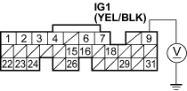
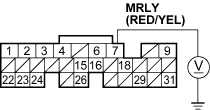
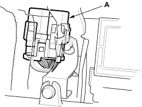
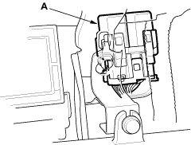

- Check for continuity between the fuel pump 5P connector terminal No. 5 and body ground.
FUEL PUMP 5P CONNECTOR

Wire side of female terminals
Is there continuity?
YES - Replace the PGM-FI main relay 2. Also replace the No. 17 FUEL PUMP (15A) fuse. 
NO - Check the fuel pump and replace it as necessary. Also replace the No. 17 FUEL PUMP (15A) fuse.
- Disconnect ECM connector E (31P).
- Turn the ignition switch ON (II).
- Measure voltage between ECM connector terminals E9 and body ground.
ECM CONNECTOR E (31P)

Wire side of female terminals
Is there battery voltage?
YES - Go to step 44.
NO - Repair open in the wire between the No. 17 FUEL PUMP (15A) fuse and the ECM (E9).

- Turn the ignition switch OFF.
- Measure voltage between ECM connector terminal E7 and body ground.
ECM CONNECTOR E (31P)

Wire side of female terminals
Is there battery voltage?
YES - Go to step 49.
NO - Go to step 46.
- Remove the PGM-FI main relay 1 (A).
LHD model:

RHD model:
